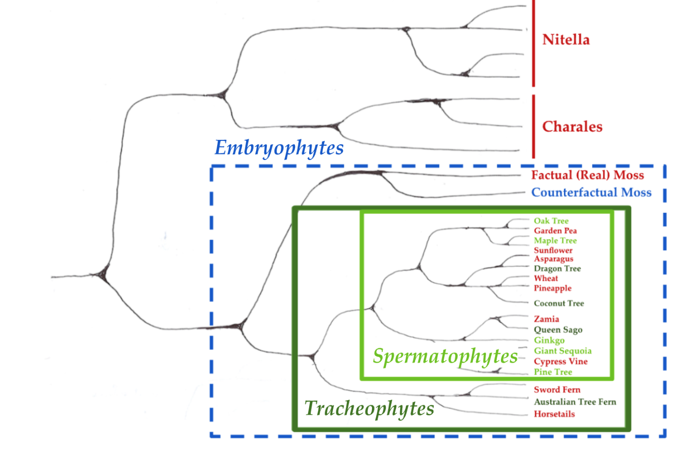

Contingency: A Conceptual Tool from Evolutionary Biology for Alignment
-1. Motivation
As AI systems become increasingly powerful, the chance of them developing dangerous features becomes increasingly likely. A key concern of AI alignment researchers is that there are dangerous features, such as power-seeking or situational awareness, which are convergent.1 This would mean that these capabilities would likely arise regardless of the particular trajectory AI development took. In a recent tweet, Eliezer Yudkowsky argues that this is the key question for AI alignment research:
From my perspective, we are trying to evaluate a picture of convergent ruin rather than any pictures of contingent ruin. That is, I'm relatively less interested in contingent-doom scenarios like "What if superintelligence is easily alignable, but Greenpeace is first to obtain superintelligence and they align It entirely to protect Earth's environment and then the SI wipes out humanity to do that?" because this is not a case for almost-all paths leading to ruin. I worry that contingent scenarios like "Age of Ultron" can fascinate humans (particularly contingent scenarios where some Other Monkey Faction Gets AGI First oh noes), and derail all possibility of a discussion about whether, in fact, the superintelligence kills everyone regardless of who 'gets' it first.
Similarly, if somebody is considering only the contingent-early-ruin scenario of "a prototype of a somewhat advanced AGI starts to consider how to wipe out humanity, and nobody spots any signs of that thought", that contingency can mask a convergent-ruin continuation of "even if they spot the early signs, everyone is still in an arms-race scenario, so they optimize away the visible signs of doom and keep going into ruin".
So I think the key question is "Why would or wouldn't humanity be convergently doomed?" rather than "How might humanity be contingently doomed?" Convergent doom isn't the same as inevitable doom, but ought to be the sort of doom that defeats easy solution / historically characteristic levels of competence for Earth / the sort of efforts we've seen already.
A doom that can only be averted by an effective multinational coalition shutting down all AI runs larger than GPT-4 for 6 years, to make time for a crash project on human intelligence augmentation that has to complete within 6 years, may not be an inevitable doom; but it was probably a pretty convergent doom if that was your best path for stopping it.2
This framing introduces “contingency” as the opposite of convergence - features of systems which are convergent are, by definition, those which are not contingent. In this piece I suggest an alternative framing, in which convergent features are themselves often contingent on some other feature. This is an initially unintuitive framing which, once you’ve seen it once, comes up everywhere. In the case of alignment, it would allow us to take some dangerous feature of AI systems which we expect to be convergent, and ask “what is the feature contingent on?”. My hope is that this shift in perspective can reveal implicit assumptions and thus allow us to spot new potential solutions for AI alignment.
The field where this shift in perspective is most salient is evolutionary biology, as it is rife with examples of both convergence and contingency. These examples allow me to present and develop a refined concept of contingency in this piece.
0. Overview of what is to follow
- A First Pass at Defining Contingency - in the context of evolutionary biology. In the basic view presented here, a feature is contingent if its presence was not inevitable.
- Why are there so many Trees? - An analysis of the ubiquity of trees in biology, which is used to motivate a _relational _conception of contingency. With this, a feature is not contingent in and of itself, but rather contingent on another feature.
- Were there always going to be Trees? - An argument that, in the absence of features which trees are contingent on, plant life could have taken a very different evolutionary path in which trees might not have arisen.
- It depends what we mean by “Tree” - The observation that the question “what are trees contingent on?” depends on the definition of tree. As such, the question also provides a tool for refining what we mean by “tree”, as well any other feature which might be of interest.
- A Conceptual Tool for Alignment - A pitch for contingency, in the sense developed here, to be taken up as a conceptual tool for alignment research. This concludes with several questions which might be of interest to alignment researchers.
1. A First Pass at Defining Contingency
A key question in evolutionary biology is “how different could life on earth have been?” - or equivalently, “how inevitable is the form of life that we have today?”. At first pass, if an answer to this question is “feature X of life could have been different or absent”, then we say feature X is contingent. Meanwhile, if an answer is “feature Y of life would be present regardless of how life developed”, then we say feature Y is convergent.3
With this exceptionally rough framing, it is already possible to identify a handful of features that we would expect to be contingent or convergent. For instance, the precise genetic code - i.e. which combinations of DNA base pairs code for which amino acid in a protein - is highly contingent. If we were to wind back life’s tape before the emergence of this code, add some noise, and then press play, we would not expect the exact same genetic code to appear again.4 On the other hand, the presence of boundaries that physically separate a living thing from its environment is likely highly convergent.5 No matter the form life could have taken, we would likely expect it to have boundaries of some kind.
Another way of looking at this question is to ask what we might expect alien life to look like, if it arose independently on another world. We probably would not expect it to have the same genetic code as life on earth. On the other hand, we probably would expect it to have some kind of boundary. There are of course, many “in between” cases where we can’t be so sure. For instance, one could ask if we would expect alien life to consist of cells, or be carbon-based. Both of these features are pretty fundamental to life as we understand it, so we might expect them to be convergent. However life on earth has only arisen once, and the last common ancestor of all extant life already had these features. As a result, the convergence or contingency of these features is difficult to establish.
This problem of epistemic access is key when thinking about contingency. When someone claims that a feature is contingent, they are claiming that, in some counterfactual world which we don’t have epistemic access to, this feature would not have arisen. This is as relevant to AI alignment as it is to evolutionary biology. The questions of “what properties might future AI systems have” and “what properties could life have had, had things gone differently” are both difficult to reason about in a similar way. They share a core challenge, namely that we lack epistemic access - in the first case, to future systems, and in the second to counterfactual or extraterrestrial ones. In each case, the concept of contingency helps us make some progress on this problem.
To demonstrate how we can reason about contingency evolutionary biology, I take the example of trees. Given that trees are so abundant today, we might expect that any environment which is capable of supporting trees would also eventually see trees evolve. I’d like to argue the contrary - trees were not inevitable, and therefore, in some sense, are contingent. In order to make this more precise, it will be useful to enquire why trees are so abundant today.
2. Why are there so many Trees?
Trees are everywhere. The current best estimate for the number of trees on Earth is three trillion.6 That’s roughly twenty times more than there are stars in our galaxy. There are two competing explanations for this ubiquity:
- Once trees evolved, they were so evolutionarily successful that they spread across the world, overwhelmed their competitors, and carved out a new niche for themselves - much in the same way that humans did.
- Trees are a highly convergent form of life. This would suggest that whenever life finds its way to an environment where trees are evolutionarily favourable (essentially anywhere on land with some amount of precipitation), we’d expect trees to evolve.
Take a moment to consider which of these two explanations you consider most convincing. Until I introduce nuance in section 4, it will suffice to take “tall, woody plant with a trunk that lives for a long time” as our working definition of a tree.
Figure 1a: Some examples of trees
Figure 1b: Some examples of plants that are not trees
One way that we go about settling this is to look at the distribution of trees in the phylogenetic tree of plant life.7 If the first explanation is correct, we should expect all trees to descend from a single common ancestor - the first species of tree which proved incredibly successful (as shown in figure 2a). If the second is correct, we would expect trees to pop up all over the place, and any two trees to be no more related to each other than any two random plants (as shown in figure 2b). Once again, take a moment to think which looks more correct.
Figure 2a: What we would expect the phylogenetic tree of plants to look like if trees evolved once, and then spread across the world
Figure 2b: What we would expect the phylogenetic tree of plants to look like, if trees were a highly convergent form of life that arose multiple times independently.
It turns out, somewhat counterintuitively, that both of these explanations are correct. Figures 3a and 3b show the same phylogenies as before (Figures 2a and 2b), but with the labelled species revealed. Both of these are accurate representations of part of the tree of life.

Figure 3a: Part of the phylogenetic tree of plants
Figure 3b: A different part of the phylogenetic tree of plants
With this in mind, how can we resolve the apparent contradiction between the two explanations we have forwarded? The key to this lies in the fact that whilst trees did evolve multiple times (in line with hypothesis 2), all trees are vascular plants, which in turn evolved only once (in line with hypothesis 1).
Vascular plants, also known as tracheophytes, are plants that have specific tissues for conducting water, minerals, and photosynthetic products through the plant. They include groups such as ferns, conifers, and flowering plants.
The current scientific consensus is that vascular plants evolved once. This evolutionary event occurred in the Silurian period, about 420 to 430 million years ago, from non-vascular plant ancestors. The first vascular plants did not have leaves or roots and likely resembled modern horsetails or clubmosses.
The evolution of vascular tissue (xylem and phloem) was a critical innovation that allowed plants to grow taller and colonise a wider range of environments. The evidence, both genetic and fossil, suggests that this evolution happened only once, leading to a common ancestor from which all vascular plants descended.8
With this, we can modify both answers with a touch of nuance to get the full explanation for the ubiquity of trees:
- Once vascular plants evolved, they were so evolutionarily successful that they spread across the world.
- Contingent on there being vascular plants, trees are a highly convergent form of life in the right environment.
Figure 4: Phylogenetic tree of plant life, which encompasses both of the parts shown in figures 3a and 3b. It shows that trees are contingent on tracheophytes, or vascular plants. Within tracheophytes, trees are a highly convergent form of life.9
Once this pattern has been identified, we can see it over and over again in the tree of life. For every example of convergent evolution, we can identify some underlying feature which the convergent feature is contingent on. For instance sharks, dolphins, and the now-extinct ichthyosaurs each share a very similar body shape and skeletal structure, despite being only distantly related to each other. This morphology has evolved at least three times independently, and thus is considered a prototypical example of convergent evolution. However, it is worth noting that this morphology depends on there being a central vertebral column (or spine), which only evolved once and is the defining feature of vertebrates. There are many other aquatic predators, such as lobsters and squid, which are not vertebrates and thus have evolved a completely different morphology. We can invoke the same structure of explanation here as we did for the ubiquity of trees:
- Once vertebrates evolved, they were so evolutionarily successful that they spread across the world.
- Contingent on there being vertebrates, shark-like morphology is highly convergent in the right environment.
Figure 5: Phylogenetic tree of animal life, showing that shark-like morphology is contingent on there being vertebrates. Invertebrate large aquatic predators, such as octopi, lobsters, or box jellyfish, do not converge to this morphology.10
This understanding of the evolution of biological systems allows us to be more precise about what we mean when we ask whether a particular feature is “contingent” or “convergent”. For any feature, we can now ask the question: what is that feature contingent on? Trees are contingent on some feature of vascular plants (likely vascular tissue), dolphin-like morphology is contingent on some feature of vertebrates (likely the vertebral column), and so on. Contingency has been upgraded from an intrinsic property of a feature, to a relational one.
3. Were there always going to be Trees?
With this, we also have gained some epistemic access to counterfactual worlds. If things had been a little different before trees first evolved, would we still expect trees to have evolved? Well trees are a highly convergent form of life, contingent on there being vascular plants. So if, in our counterfactual, there are vascular plants, then the answer is yes: we would still expect trees to evolve. However vascular plants only evolved once - which also suggests that they could have easily evolved no times at all. If they hadn't, plant life could have taken a very different evolutionary path. In these worlds, there’s no saying that trees would have evolved in any form.
It takes a little imagination to consider just how differently life could have gone if it had taken a different path. One might, for example, argue that there would always be an evolutionary pressure for plants to grow taller, given their need for sunlight. They would have figured out a way to do it somehow, and so they would likely come to resemble trees. First, I’m not sure the underlying claim is true - Earth had nothing which resembled tall plants 3.3 billion years - roughly 90% of life’s history. It’s not clear that the arms race for growing taller would have kicked in without a very particular setup. Second, even if it is - plants could have found very different ways to grow tall (e.g. figure 6)
Figure 6: A depiction of a counterfactual species of moss growing on symbiotic giant fungi, generated with midjourney. This illustrates that, had vascular plants not evolved, plants might have grown tall not by developing their own supporting structures, but instead by symbiotically associating themselves with fungi that grow tall.11
This is made more obvious if we take broader features which trees are also contingent on. For instance, trees are clearly contingent on there being plants. In worlds where plants never evolved, there clearly would not have been any trees. In these worlds, the multicellular offspring of cyanobacteria might have evolved an equivalent to animal nervous systems, and be mobile creatures nothing like the plants we see today (see figure 7). The concept of “tree” would be as alien to these creatures as they are to us.
Figure 7: A depiction of a mobile photosynthetic creature, generated with midjourney. This example is intended to try and shed some light into the possibility space - it is likely “actual” counterfactuals would, more often than not, be beyond the scope of our imagination.
4. It depends on what we mean by “Tree”
There are many nuances in the concept of contingency I have not yet acknowledged. For instance, on top of requiring vascular tissue, trees also require the right environment to emerge. We could say that trees are also “contingent on” the right set of environments - which clearly does not include deserts, oceans, or the arctic. This is something I’d like to get back to in the future, but for now I am only considering contingencies on features of the ancestors of a system, rather than the environment in which the systems are embedded.
This said, there is a different nuance which I would like to raise at this stage. When we ask “why are there so many trees?”, or more precisely “what are trees contingent on?”, the actual answer depends on what we mean by “tree”. Up to this point I’ve been a little mischievous, and unquestioningly referred to these as trees:
Figure 8a: Dracaena cinnabari - a species of Dragon Tree
Figure 8b: Cyathea cooperi - a species of Australian Tree Fern
Whilst these are both called trees, and have many features we typically associate with trees, whether or not they actually are trees is a question of definition, and consequently debate. A broader definition of tree would be the rather intuitive “tall, woody plant with a trunk that lives for a long time”, and would include both of these examples. However a narrower definition would also require trees to have secondary growth in their trunk, forming tree rings. This narrower definition excludes tree ferns and dragon trees, as well as coconut trees and cycads such as Queen Sago (see Figure 9), from counting as “trees”. If we were to take this narrower definition of tree and ask what this feature is contingent on, the answer is not vascular plants but rather a subset known as spermatophytes, or seeded plants.
Conversely, we could also take a wider definition which includes any photosynthetic organism that grows above a particular height. This wider definition could include the counterfactual moss-fungal symbionts discussed in section 3, and would be contingent on embryophytes - or land plants.
Figure 9: Phylogenetic tree of plants, showing how Embryophytes (land plants), Tracheophytes (vascular plants), and Spermatophytes (seeded plants) are nested clades. The light green names are “true trees” which count as trees under any definition, whilst the dark green names are those that are only trees under a looser definition. Broader definitions of tree are contingent on a clade which shares a more distant last common ancestor.
This pattern, in which a more specific version of a feature (in this case the narrower definition of tree) is contingent on a feature which emerged more recently (in this case seeded plants) is also pretty widespread. In some sense this is obvious - a loosely defined feature will apply to more systems, and thus you will have to go further back to find the ancestor of all systems which possess that feature. What’s important to note here is that a proper answer to “what is X contingent on?” requires a precise definition of X. As such, a potential advantage of asking this question is that it requires us to be more precise about what we mean when we say that a system possesses feature X.
5. A Conceptual Tool for Alignment Research
In AI alignment, the primary concern is how we can prevent features which are dangerous and convergent from arising. Research to this effect is often predicated on the idea that preventing such a feature involves systematic detection of the feature, and selection against systems in which the feature is detected. If we take the evolution of trees as a biological analogue of this situation, we might ask what actions one could have taken before trees first evolved to prevent them from ever arising. The naive answer would be to go round detecting woody plants that grow above a certain height, and select against them. This is not a robust strategy - all it would take for you to fail is a single fast-growing plant to escape detection long enough to grow to the necessary height. The concept of contingency developed in this post allows us to propose a better solution.
In order to spell this out to full effect, I must first sketch how the refined concept of contingency which I have spelled out in the context of evolutionary systems could also apply to AI. If you’re a fan of definitions, we can say: feature X of a system is contingent on feature Y of the system’s ancestor, if without there having been feature Y, we would not have feature X. In the case that the feature in question is a convergent one, then we would also expect that once systems with feature Y become abundant, then feature X is likely to develop in an environment in which it is favourable.
In order to make such a concept rigorous (and thus also to develop proofs of the hypotheses) we would need to also have precise definitions of what it means for one system to be an “ancestor” or “descendent” of another. Evolutionary biology is predicated on their being systems which reproduce with limited variation, which makes this concept straightforward to define. There are some reasons to believe that this can be extended to sociotechnical systems: successful economic models of technology often assume that technological systems reproduce in a similar way to biological ones,12 and many macroecological and macroevolutionary patterns in biological systems also apply to sociotechnical ones.13 However, it also is likely that the idealised distinction we have drawn between a system’s ancestors and the historical environment in which it evolved would be much messier in the case of sociotechnical systems.14
If it is possible to define contingency in a way that applies to a wide class of systems, this would make contingency a powerful epistemic tool for reasoning about counterfactual systems. If we’d like to know in which counterfactual worlds feature X would likely not have arisen, then we ask “what is feature X contingent on?” If we find the most recent feature Y which answers this question, then it is likely that counterfactual worlds which contain life with feature Y will likely also develop life with feature X.
As an example, consider “situational awareness”, in which a model can distinguish whether it is in training or deployment and reason about features of itself, as a potentially convergent feature of AI systems. A preliminary answer to “what is situational awareness contingent on?” could be “learning from data that is produced as a consequence of the systems’ actions”. If this answer holds, it would suggest that systems which develop situational awareness must have a feedback loop between actions and observations in their learning environment. Without such a feedback loop, we wouldn’t expect situational awareness to readily (convergently) emerge.15
The question “what is situational awareness contingent on” also prompts us to be more precise about what we mean by “situational awareness”. To do this, we could take a family of definitions of situational awareness, each at different levels of specificity. For instance, the most specific definition might require an AI system to have an accurate self model that can generalise to out of training distribution environments, whilst a broader definition might only require the system to produce qualitatively different behaviour in training and deployment. As in the evolution example, it is likely that narrower definitions of a feature are contingent on a more specific set of systems, and hence would be easier to prevent occuring. If we find the narrowest definition of situational awareness which still captures the aspects of this feature that could lead to catastrophic outcomes, we can work with a definition which gives us the most traction in preventing those catastrophic outcomes.16
In the context of AI alignment, answers to the question “what is feature X of AI systems contingent on” can provide us with features of AI systems which are required for feature X to readily arise. If feature X is particularly dangerous, then this may provide a point of intervention that could be leveraged in order to avoid disaster.17 In the context of our evolutionary analogy, if, 425 million years ago, we wanted to avoid the emergence of trees, our most robust strategy for doing so would involve preventing vascular plants from emerging and gaining a foothold. Fighting against convergent evolution is hard: once the world is covered in vascular plants, the subsequent emergence of trees becomes much more difficult to avoid.
This piece was written at the Alignment of Complex Systems Research Group (ACS). Many thanks to Jan Kulveit, Mihály Bárász, Nora Ammann, Rose Hadshar, Simon McGregor and Tomáš Gavenčiak from ACS for their feedback on various drafts.
Footnotes
-
“Instrumental Convergence” - which states that certain dangerous properties of AI systems (such as accumulating resources or self-improvement) are convergent - is one of the most common framings of arguments of AI risk. https://www.lesswrong.com/tag/instrumental-convergence. ↩
-
https://twitter.com/ESYudkowsky/status/1660315158810591233?s=20. ↩
-
I use the term feature in a very broad sense. What I have in mind is a binary classification - for any system, you can say either this system either possesses that feature, or it does not. ↩
-
The metaphor of “replaying life’s tape” was introduced by legendary evolutionary biologist Stephen J Gould. Gould SJ. 1991. Wonderful life—the Burgess shale and the nature of history. New York, NY: WW. Norton & Company p.48. ↩
-
Different arguments to this effect can be found in the literature on alignment (e.g. Andrew Critch’s sequence on Boundaries: https://www.lesswrong.com/posts/8oMF8Lv5jiGaQSFvo/) and the Active Inference literature (e.g. Kirchoff, M. et al. 2018. “The Markov blankets of life: autonomy, active inference and the free energy principle” Interface 15). ↩
-
Crowther, Thomas W., et al. 2015. "Mapping tree density at a global scale." Nature 525. ↩
-
A phylogenetic tree is a branching diagram which shows the evolutionary relationship between different species. Not to be confused with the species of trees themselves, which in the diagrams that follow will often be at leaf nodes of phylogenetic trees. ↩
-
Thanks to GPT4 for the handy explanation. ↩
-
There is another possible hypothesis which would generate the same phylogenetic tree, namely that trees evolved exactly once, along with vascular tissue, and then unevolved many times subsequently. In order to rule this out, we need to independently verify that the first tracheophytes were not trees, and the first trees only evolved after tracheophytes emerged. This is in fact the case - the first tracheophytes were likely much more similar to modern horsetails than any tree. ↩
-
Once again, it is important to note that the first vertebrate did not have a shark-like morphology - instead it likely had a very simple, worm-like morphology. ↩
-
During the Paleozoic era, just before the evolution of vascular plants, giant fungi called Prototaxites grew up to 8m (26ft) tall - c.f. Boyce K.C. et al. 2007. “Devonian landscape heterogeneity recorded by a giant fungus” Geology 35. ↩
-
Arthur, W.B., 2009. The nature of technology: What it is and how it evolves. Simon and Schuster. ↩
-
My favourite example of this: Keil, Petr, et al. 2018. "Macroecological and macroevolutionary patterns emerge in the universe of GNU/Linux operating systems." Ecography 41. ↩
-
My best guess for what is needed to make this into a coherent theory requires a principled treatment of system - environment decomposition for systems that change over time. For those interested in exploring this further, I suspect there are some valuable clues in Ehresmann, A. C., & Vanbremeersch, J. P. (1987). “Hierarchical Evolutive Systems: A mathematical model for complex systems.” Bulletin of Mathematical Biology 49. ↩
-
An argument to this effect is made by Jan Kulveit in “Why Simulator AIs want to become Active Inference AIs” (https://www.alignmentforum.org/posts/YEioD8YLgxih3ydxP/). ↩
-
For a discussion on how a particularly strong (hence narrow) version of situational awareness is (a) likely convergent and (b) likely to lead to AI takeover, see Cotra, A. 2022. “Without specific countermeasures, the easiest path to transformative AI likely leads to AI takeover”: (https://www.cold-takes.com/without-specific-countermeasures-the-easiest-path-to-transformative-ai-likely-leads-to-ai-takeover/) ↩
-
A recent paper from Deepmind on “Model evaluation for extreme risks”(https://arxiv.org/abs/2305.15324) provides a high level categorisation of potentially dangerous features AI systems could develop, situational awareness being among them. I suspect it would be a useful exercise to go through the list and try and establish (a) what each feature may be contingent on, and (b) what this means for how we define the feature in question. ↩